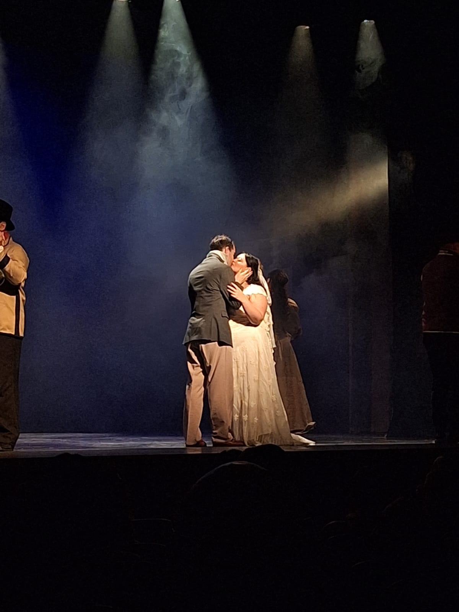

|
10 de Noviembre, 2024 Ignacio Rodriguez Costantini  |
Los Miserables - Una Obra Maestra AtemporalLos Miserables, conocido en todo el mundo como Les Mis, es más que un musical; es una experiencia emotiva y profunda que nos sumerge en la lucha, la esperanza y la redención en la Francia del siglo XIX. Basada en la obra monumental de Victor Hugo, esta adaptación al teatro nos invita a explorar temas universales como la justicia, el sacrificio, la fe y la lucha por la dignidad humana. La historia sigue la vida de Jean Valjean, un hombre marcado por su pasado como prisionero, quien busca redimirse y vivir una vida honrada. Sin embargo, el obsesivo inspector Javert, determinado a atraparlo, lo persigue implacablemente. En medio de este conflicto, conocemos a una serie de personajes entrañables, como la trágica Fantine, la resiliente Cosette, el valiente Marius, y una variedad de héroes anónimos que luchan por un cambio en la sociedad. Uno de los aspectos más emocionantes de esta producción en particular fue ver a mi amiga Camila en el escenario. Camila interpretó su papel con una intensidad y una profundidad emocional que dejaron una marca imborrable en cada espectador. Desde el primer momento, su presencia en escena fue cautivadora, capturando la esencia de su personaje y transmitiendo un mensaje de esperanza y valentía que resonó profundamente en el público. Camila interpretó uno de los papeles más desafiantes, donde cada gesto y cada línea debían expresar una mezcla de sufrimiento y fortaleza. Su actuación en canciones como On My Own fue sobrecogedora. A través de su voz y expresión, transmitió el dolor de su personaje, una mujer atrapada en un amor no correspondido y en una vida de sacrificio. La audiencia apenas podía contener las lágrimas al sentir la intensidad y sinceridad de sus emociones. La ambientación de Los Miserables es impresionante. La escenografía, con sus callejones oscuros y sus barricadas imponentes, crea un telón de fondo perfecto para esta historia de revolución y esperanza. Cada escena está cuidadosamente diseñada para reflejar el espíritu de la época y para sumergir al espectador en la atmósfera turbulenta de la Revolución Francesa. La música, icónica y poderosa, eleva cada momento, desde el dolor de I Dreamed a Dream hasta la inspiradora Do You Hear the People Sing?, un himno a la libertad y a la lucha colectiva. Ver a Camila actuar en una producción tan significativa ha sido una experiencia transformadora. A través de su actuación, se puede ver la dedicación, el esfuerzo y la pasión que pone en cada función. Esta obra nos recuerda el poder del arte para hacernos reflexionar sobre nuestra propia humanidad y sobre la importancia de luchar por un mundo más justo. Los Miserables es un recordatorio eterno de que, aunque enfrentemos adversidades, siempre hay espacio para la redención y la esperanza. La historia de Jean Valjean y de todos los personajes que habitan este universo sigue siendo relevante hoy en día. Gracias a la participación de personas como Camila, esta obra sigue viva, tocando corazones y recordándonos el poder transformador del teatro. |